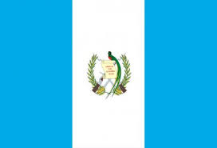

Моя країна - Гватемала

Назва - Гватемала
Перші поселення на території сучасної Гватемали виникли у 11-му тисячолітті до нашої ери. У 3 — му тис. до н. е. поселились індіанці майя, які не мали єдиної держави. У 2-му — 9-му століттях н. е. відбувся розквіт культури майя, потім настав період занепаду.
У 1523 році почалася колонізація країни іспанцями (під проводом Педро де Альварадо). До 1525 року індіанці були підкорені. Найбільший опір іспанцям чинило плем'я кіче, яке досі залишається найбільшим індіанським племенем Гватемали. Іспанці з середини 16-го століття почали створювати плантації і видобувати золото і срібло. Однак господарське освоєння Гватемали було слабким. На експорт поставлялися практично тільки барвники — з індиго і з комах кошеніль. У 1564 у було створено генерал-капітанство Гватемала. До 1773 року столицею було місто Антигуа, після руйнівного землетрусу їі перенесли до Гватемали.
На початку XIX століття почалися війни за незалежність в іспанських колоніях Америки. 15 вересня 1821 була проголошена незалежність Гватемали. Незабаром була створена федерація країн Центральної Америки. Її першим президентом був Мануель Хосе Арсе. Він провів низку реформ, зокрема реформу освіти, увів свободу релігії; також заохочувалися іноземні інвестиції. В 1837 почалося селянське повстання. Президент не зміг його придушити і пішов у відставку. У 1838 центральноамериканська федерація розпалася. З початку 1860-х років переселенці з Німеччини почали культивувати в Гватемалі плантації кавових дерев, в результаті кава стала найважливішим експортним товаром Гватемали. В 1898 президентом став консерватор Мануель Кабрера, що надав американцям, зокрема, компанії «Юнайтед Фрут», родючі землі, на яких компанія створила великі плантації бананів, що стали другим після кави експортним товаром Гватемали.
Компанія «Юнайтед Фрут» на початку XX століття істотно розширила гватемальський порт Пуерто-Барріос на атлантичному узбережжі країни. Згодом вона розширила порти Гватемали на тихоокеанському узбережжі. Після повалення Кабрери лібералами (1920 року) була сутичка за владу, в якій 1931-ого переміг генерал Хорхе Убіко. Він надав компанії «Юнайтед Фрут» нові землі, причому абсолютно безкоштовно, і тому користувався підтримкою США. У короткий час він став диктатором. У 1930-ті роки найбільшим після США зовнішньоторговельним партнером Гватемали стала Німеччина — третина обсягу експорту та імпорту Гватемали. Проте в грудні 1941 Гватемала була змушена слідом за США оголосити війну країнам «осі» — Німеччини, Італії та Японії. У військових діях Гватемала не брала участі, лише припинила торгівлю з цими країнами. У 1992 році Нобелівська премія миру була присвоєна індіанській активістці Рігоберто Менчу, яка виступала з відкритим осудом гватемальської диктатури. Цього ж року почалися переговори з партизанськими угрупованнями, 29 грудня 1996 року уряд президента Альваро Арсу підписав мирну угоду з партизанами, проте ні колишні військові правителі, ні партизани досі не притягнуті до відповідальності.
Після багатьох років правління диктаторів, які не проводили виборів, і громадянських воєн у Гватемалі нарешті настав мир, проте стан охорони здоров'я та освіти украй незадовільний. 39 % дорослих жінок не вміють ні читати, ні писати. З 2004 року президентом країни був Оскар Берже з партії Великий Національний Альянс. 9 вересня 2007 року був проведений перший раунд чергових президентських виборів, перемогу в яких здобули бізнесмен Альваро Колом з лівоцентристської партії Національний Союз Надії і колишній генерал гватемальської армії Отто Перес Моліна з право-центристської Патріотичної партії. Другий раунд виборів відбувся 4 листопада 2007. Перемогу отримав Альваро Колом. 14 січня 2008 Альваро Колом офіційно вступив на посаду президента Гватемали.